# Install packages
if (!requireNamespace("ggraph", quietly = TRUE)) {
install.packages("ggraph")
}
if (!requireNamespace("igraph", quietly = TRUE)) {
install.packages("igraph")
}
if (!requireNamespace("tidyverse", quietly = TRUE)) {
install.packages("tidyverse")
}
if (!requireNamespace("collapsibleTree", quietly = TRUE)) {
install.packages("collapsibleTree")
}
if (!requireNamespace("dendextend", quietly = TRUE)) {
install.packages("dendextend")
}
# Load packages
library(ggraph)
library(igraph)
library(tidyverse)
library(collapsibleTree)
library(dendextend)Dendrogram
A dendrogram is a graphical representation of hierarchical relationships between objects. It is widely used in cluster analysis, especially hierarchical clustering, to visualize the similarity or distance between data points.
A dendrogram is a hierarchical structure consisting of a series of nodes and branches connecting them. Each node represents a data point (or cluster), while the length of the branch indicates the similarity or distance between objects. Typically, a dendrogram starts with a single data point at the bottom and gradually merges to form larger clusters until all objects are merged into one large class. Branches represent the similarity between two clusters or objects, usually measured by a distance metric such as Euclidean distance. Shorter branches indicate greater similarity between the two objects, while longer branches indicate lower similarity. Non-leaf nodes are “merged” nodes generated from different data points or clusters, indicating that they have been merged into a larger class. Leaf nodes are the bottom nodes of the dendrogram and typically represent the original data points (such as samples, genes, etc.).
Example

This dendrogram visualizes the results of hierarchical clustering, showing the similarity of gene expression levels and cluster structure among TCGA-BRCA samples. The x-axis represents different TCGA-BRCA samples, with leaf nodes at the bottom identifying each individual sample. The y-axis represents the merge distance or similarity between different samples. In hierarchical clustering, two samples are merged into one cluster when their similarity is sufficiently high. A larger y-axis value indicates lower similarity between the two clusters or samples; conversely, a smaller value indicates higher similarity. The dendrogram shows the merging process through branches. Each branch represents a merge; the shorter the branch, the higher the similarity between the two samples. The dendrogram starts at the bottom, with each individual sample being gradually merged until a large cluster is formed. At the top of the tree, all samples are merged into a single cluster.
Setup
System Requirements: Cross-platform (Linux/MacOS/Windows)
Programming Language: R
Dependencies:
ggraph;igraph;tidyverse;collapsibleTree;dendextend
Data Preparation
Use the built-in R datasets warpbreaks, mtcars, USArrests, and TCGA-BRCA.star_counts.tsv from the UCSC Xena website (UCSC Xena (xenabrowser.net)).
# warpbreaks
data("warpbreaks")
warpbreaks <- warpbreaks %>%
mutate(breaks = as.character(breaks))
# Convert nested dataframe data to side list data and then draw a tree diagram.
edges_level1_2 <- warpbreaks %>%
select(wool, tension) %>%
distinct() %>%
rename(from = wool, to = tension)
edges_level2_3 <- warpbreaks %>%
select(tension, breaks) %>%
distinct() %>%
rename(from = tension, to = breaks)
edge_list <- bind_rows(edges_level1_2, edges_level2_3) # merge
edge_list_unique <- edge_list[edge_list$from != "B",]
edge_list_unique$to <- make.unique(edge_list_unique$to)
# Create a graph object
mygraph_unique <- graph_from_data_frame(edge_list_unique)
# Hierarchical grouping
V(mygraph_unique)$group <- case_when(
V(mygraph_unique)$name %in% unique(warpbreaks$wool) ~ "Group 1", # root node wool
str_detect(V(mygraph_unique)$name, "^[LMH]") ~ "Group 2", # First layer of tension
str_detect(V(mygraph_unique)$name, "^[0-9]") ~ "Group 3", # Second layer breaks
TRUE ~ "Group 4" # Additional correction layer
)
V(mygraph_unique)$color <- case_when(
V(mygraph_unique)$group == "Group 1" ~ "red",
V(mygraph_unique)$group == "Group 2" ~ "yellow",
V(mygraph_unique)$group == "Group 3" ~ "green",
V(mygraph_unique)$group == "Group 4" ~ "blue"
)
# mtcars
mtcars %>%
select(mpg, cyl, disp) %>%
dist() %>%
hclust() %>%
as.dendrogram() -> mtcars_dend # Clustering using 3 variables
# TCGA-BRCA.star_counts.tsv
data <- read.csv("https://bizard-1301043367.cos.ap-guangzhou.myqcloud.com/TCGA-BRCA.star_counts.tsv", header = TRUE, sep = "")
expression_subset <- data[1:20,2:21]
colnames(expression_subset) <- substr(colnames(data)[2:21], 6, nchar(colnames(data)[2:21]))
distance_matrix <- dist(t(expression_subset), method = "euclidean") # Calculate Euclidean distance
cluster_result <- hclust(distance_matrix, method = "complete") # Hierarchical clustering using hclust
sample_type <- substr(colnames(expression_subset), nchar(colnames(expression_subset)), nchar(colnames(expression_subset)))
colors <- ifelse(sample_type == "A", "red", "blue")
brca_dend <- as.dendrogram(cluster_result)
brca_dend <- brca_dend %>%
color_labels(col = colors)Visualization
1. Tree diagram of hierarchical data
1.1 Basic plot
Hierarchical tree diagrams are constructed based on known classification structures, illustrating the relationships between different levels. For example, in a corporate organizational structure, the CEO’s management team is at the top of the tree, while lower-level employees are distributed across different branches of the tree according to their functions or departments. This type of tree diagram hierarchically displays the relationships between various groups, helping to understand the overall hierarchical structure.
ggraph(mygraph_unique, layout = 'dendrogram', circular = FALSE) +
geom_edge_diagonal() +
geom_node_point() +
theme_void()
The graph above, constructed using multiple variables (wool, tension, breaks) from the warpbreaks dataset, illustrates the hierarchical relationship between them. The root node is the A category of wool. The first layer represents the tension (L, M, H) levels under each wool category, and the second layer represents the breaks under each tension category. Through this tree structure, the graph clearly shows how to start from wool (fabric type), progressively refine to different levels of tension, and then to the specific details of the number of breaks.
1.2 Custom tree diagram
Use the circular = TRUE parameter to draw a circular tree diagram.
ggraph(mygraph_unique, layout = 'dendrogram', circular = TRUE) +
geom_edge_diagonal() +
theme_void() 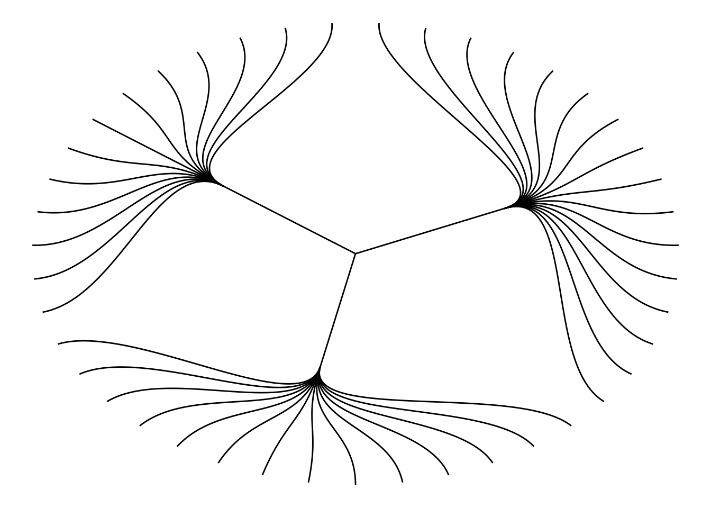
Choose different edge styles. The ggraph package contains two main functions: geom_edge_link() and geom_edge_diagonal(). The most common “elbow” shape in tree graphs is not visible when the edge style is a straight line.
ggraph(mygraph_unique, layout = 'dendrogram', circular = FALSE) +
geom_edge_link() +
theme_void() 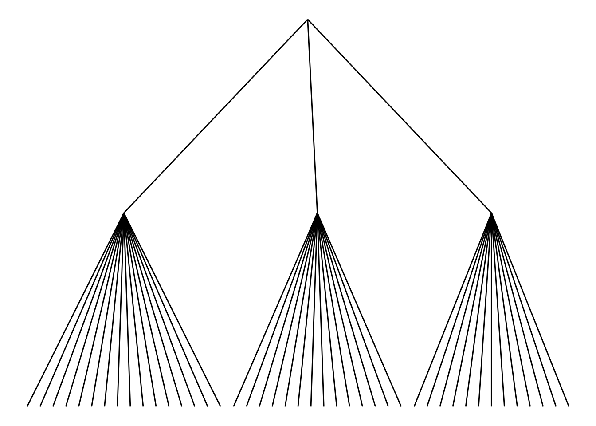
Use geom_node_text and geom_node_point to add labels and nodes.
ggraph(mygraph_unique, layout = 'dendrogram') +
geom_edge_diagonal() +
geom_node_text(aes(label = name, filter = leaf), angle = 90, hjust = 1, nudge_y = -0.04) +
geom_node_point(aes(filter = leaf), alpha = 0.6) +
ylim(-0.5, NA) +
theme_void()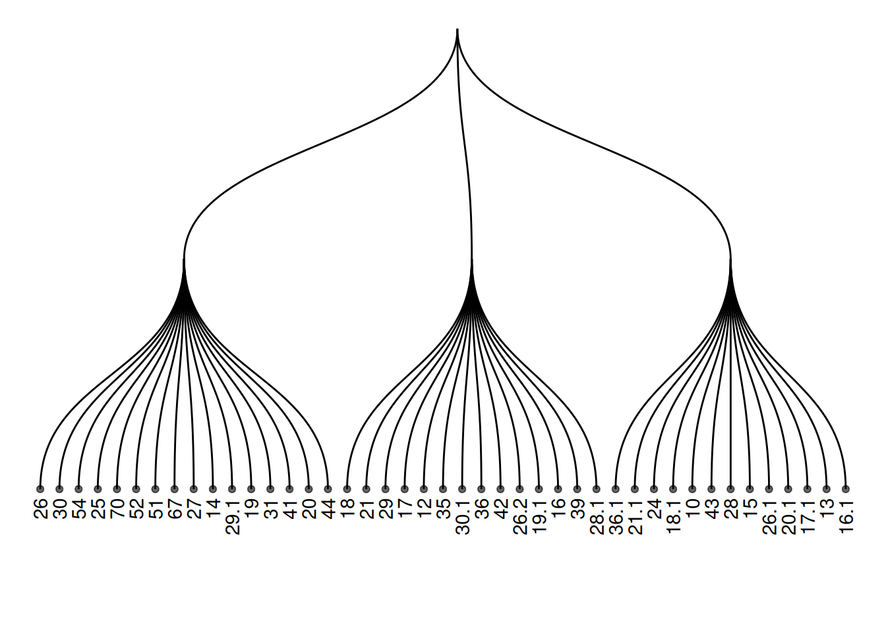
Add color or shape to the treemap to show the organization of the dataset more clearly. ggraph works the same as ggplot2, allowing you to map a column of the initial dataframe to shape, color, size, or other elements.
ggraph(mygraph_unique, layout = 'dendrogram') +
geom_edge_diagonal() +
geom_node_text(aes(label = name, color = color, filter = leaf), angle = 90, hjust = 1, nudge_y = -0.1) +
geom_node_point(aes(color = color), alpha = 0.6) +
ylim(-0.6, NA) +
theme_void() +
theme(legend.position = "none")
2. Interactive tree diagram
Use the CollapsibleTree package to draw interactive tree diagrams.
p <- collapsibleTree(warpbreaks, c("wool", "tension", "breaks"))
pInteractive tree diagram
This diagram visualizes the warpbreaks dataset as an interactive tree diagram, categorized by the hierarchical structure of three variables: “wool” (wool type), “tension,” and “breaks” (number of breaks). Each node represents a level, and users can click to expand or collapse different nodes to view the data summary at that level. This diagram helps users understand the distribution of hierarchical data and the relationships between levels, making it suitable for displaying data with multi-level structures.
3. Clustering dendrogram
Use the built-in hclust() function in R to plot the graph.
The input dataset is typically a matrix, where each row represents a sample and each column represents a variable. If needed, the matrix can be transposed using the
t()function to swap rows and columns.Hierarchical clustering is performed on a square matrix (samples x sample matrix) that describes the similarity or distance between samples. These distances can be calculated using functions such as
dist()(for Euclidean distance) orcor()(for correlation), depending on your problem and the characteristics of your data.Then, the
hclust()function is used to perform hierarchical clustering, yielding a clustering result. Finally, you can use theplot()function to visualize the clustering results, such as a dendrogram, and make any necessary customizations.
The principle of hierarchical clustering is as follows: First, calculate the distance (or similarity) between samples. Next, find the minimum distance between two samples. Merge these two samples into a cluster. Use the “centroid” of these two objects to represent the newly formed cluster. Then, continue repeating this process until all objects have been merged into a final cluster. Different methods can be used to calculate the distance between two clusters: for example, using the maximum distance, minimum distance, average distance between two points in the cluster, or using the Ward method (the default). Different distance calculation methods will affect the clustering results.
3.1 Basic tree diagram
plot(cluster_result, main = "Hierarchical Clustering of TCGA-BRCA Samples",
xlab = "Samples", ylab = "Height", sub = "", cex = 0.8)
This figure illustrates the similarity and clustering structure among gene expression levels in the TCGA-BRCA samples.
3.2 Zoom Group
You can zoom in on specific parts of the tree. Use the [[..]] operator to select the group of interest.
dhc <- as.dendrogram(cluster_result)
par(mar = c(8, 4, 4, 2))
plot(dhc[[2]], main = "Zoom on a Part of the Dendrogram")
This figure presents a partial view of the hierarchical clustering results of gene expression levels in the TCGA-BRCA samples. By extracting the second part of the clustering dendrogram, the figure shows the clustering structure at a certain level. This part helps to observe the similarities between samples and the clustering process in depth, especially for the details of certain specific clusters.
3.3 Colors and Legends
par(mar = c(8, 4, 4, 2))
plot(brca_dend, main = "Hierarchical Clustering of TCGA-BRCA Samples", xlab = "", ylab = "", sub = "", cex = 0.8)
legend("topright",
legend = c("Tumor (A)", "Normal (B)"),
col = c("red", "blue"),
pch = 20,
bty = "n",
pt.cex = 1.5,
cex = 0.8,
text.col = "black",
horiz = FALSE,
inset = c(0, 0.1)) # Add legend
This figure illustrates the hierarchical clustering results of gene expression levels in TCGA-BRCA samples. The dendrogram visually demonstrates the similarity between different samples, and the color-coded labels (red for tumor samples, blue for normal samples) show the distribution of tumor and normal samples within the clusters. The legend provides the correspondence between colors and sample types, aiding in understanding the sample classification process.
4. dendextend package
Use the dendextend package to draw clustering dendrograms.
First, let’s review how to build dendrograms in basic R:
The input dataset is typically a data frame, where each row represents a sample and each column represents a feature.
The
dist()function is used to calculate the distance between samples, usually using Euclidean distance or other distance metrics suitable for the data type.The
hclust()function performs hierarchical clustering, grouping samples based on similarity.
Finally, the plot() function is used to visualize the clustering results, directly drawing a hierarchical dendrogram to help us visually view the clustering relationships between samples.
4.1 Basic tree diagram
par(mar=c(7,3,1,1))
plot(mtcars_dend)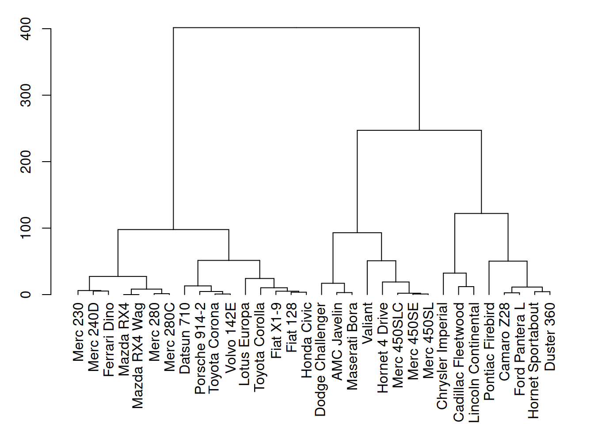
This figure shows the hierarchical clustering results of three variables (mpg, cyl, and disp) in the mtcars dataset. Through cluster analysis, the dendrogram in the figure clearly shows the similarity between different car samples.
4.2 Custom tree diagram
# Left image
mtcars_dend %>%
# Custom branches
set("branches_col", "grey") %>% set("branches_lwd", 3) %>%
# Custom Leaf
set("labels_col", "orange") %>% set("labels_cex", 0.8) %>%
plot()
# middle image
mtcars_dend %>%
set("nodes_pch", 19) %>%
set("nodes_cex", 0.7) %>%
set("nodes_col", "orange") %>%
plot()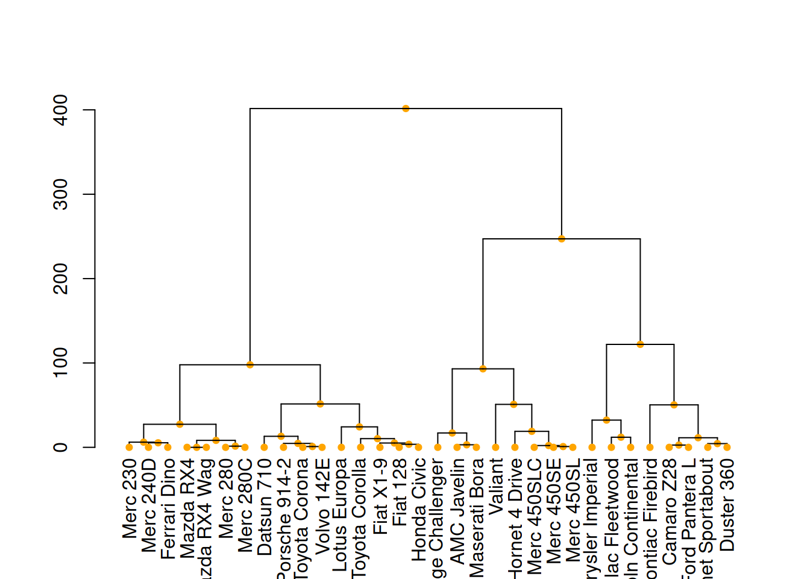
# right image
mtcars_dend %>%
set("leaves_pch", 19) %>%
set("leaves_cex", 0.7) %>%
set("leaves_col", "skyblue") %>%
plot()
These three diagrams demonstrate different ways to customize a tree diagram, enhancing its visual appeal by modifying the color, size, and shape of branches, nodes, and leaves.
4.3 Highlight clusters
dendextend has some great features for highlighting tree clusters. Branches can be colored and marked based on their clustering properties, specifying the desired number of clusters. The rect.dendrogram() function even allows highlighting one or more specific clusters using rectangles.
par(mar=c(1,1,1,8))
mtcars_dend %>%
set("labels_col", value = c("skyblue", "orange", "grey"), k=3) %>%
set("branches_k_color", value = c("skyblue", "orange", "grey"), k = 3) %>%
plot(horiz=TRUE, axes=FALSE)
abline(v = 350, lty = 2)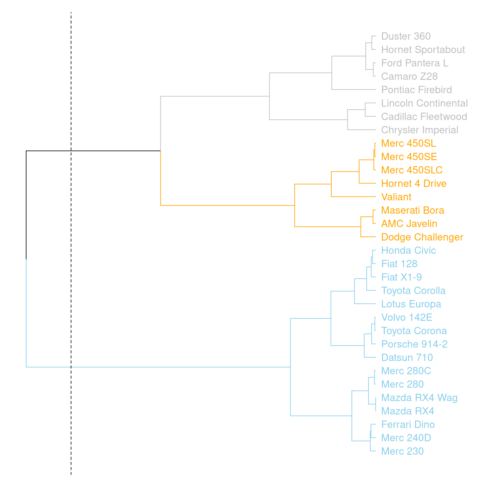
This graph horizontally displays the hierarchical clustering results of three variables (mpg, cyl, and disp) in the mtcars dataset. Different clusters are distinguished by different colors, and a specific cluster location is marked by a dashed line.
# Highlight with a rectangle
par(mar=c(9,1,1,1))
mtcars_dend %>%
set("labels_col", value = c("skyblue", "orange", "grey"), k=3) %>%
set("branches_k_color", value = c("skyblue", "orange", "grey"), k = 3) %>%
plot(axes=FALSE)
rect.dendrogram( mtcars_dend, k=3, lty = 5, lwd = 0, x=1, col=rgb(0.1, 0.2, 0.4, 0.1) ) 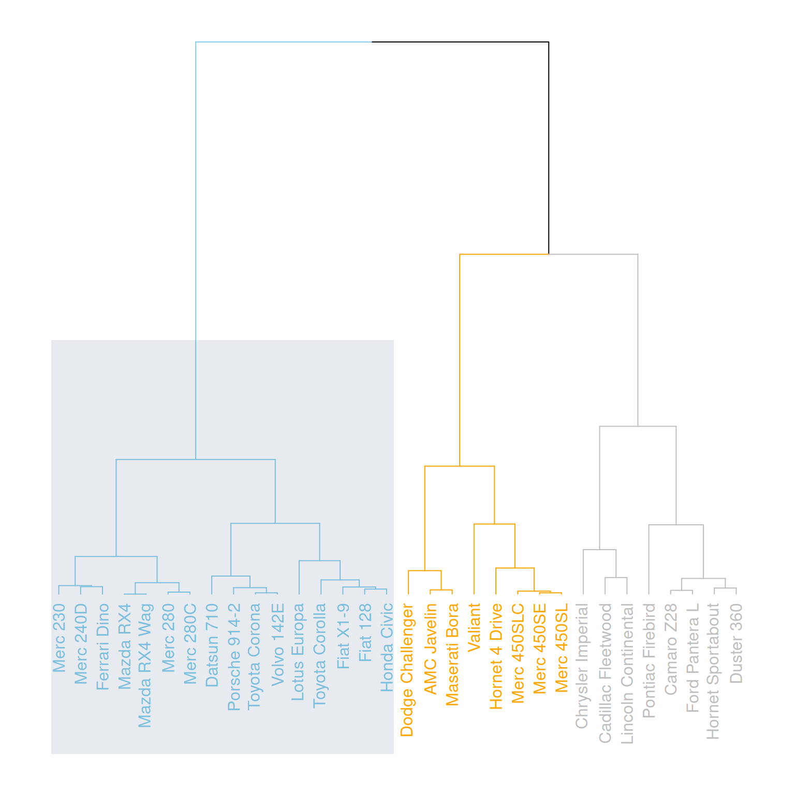
This graph horizontally displays the hierarchical clustering results of three variables (mpg, cyl, and disp) in the mtcars dataset, highlighting specific categories with rectangles.
4.4 Comparison with expected clustering
Comparing the obtained clusters with the expected distribution is a common task. In mtcars, the am column is a binary variable. We can use the colored_bars() function to check if this variable is consistent with the clusters we obtained.
my_colors <- ifelse(mtcars$am==0, "forestgreen", "green")
par(mar=c(10,1,1,1))
mtcars_dend %>%
set("labels_col", value = c("skyblue", "orange", "grey"), k=3) %>%
set("branches_k_color", value = c("skyblue", "orange", "grey"), k = 3) %>%
set("leaves_pch", 19) %>%
set("nodes_cex", 0.7) %>%
plot(axes=FALSE)
colored_bars(colors = my_colors, dend = mtcars_dend, rowLabels = "am")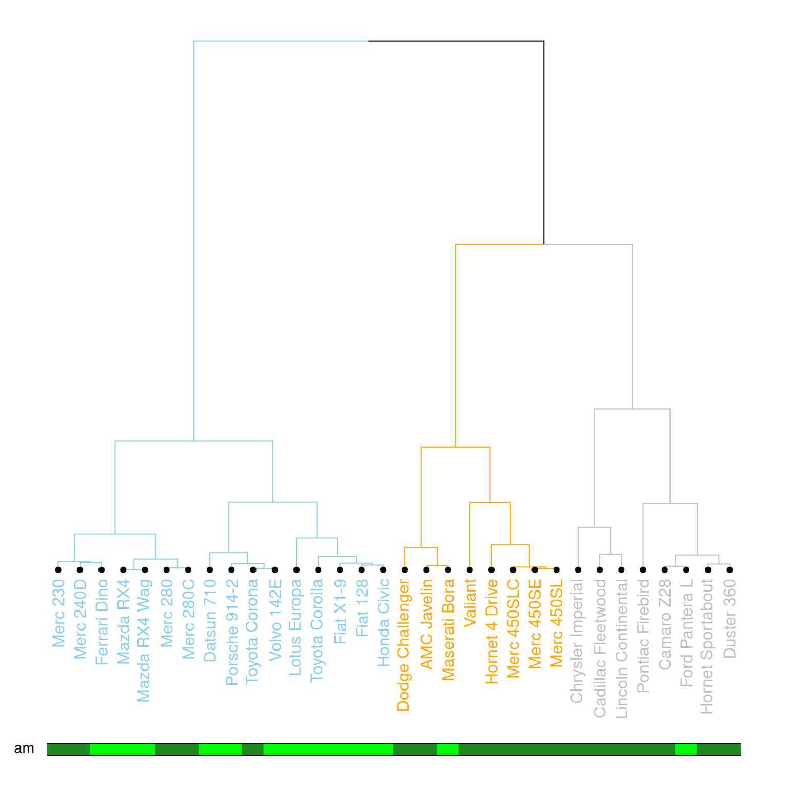
This diagram illustrates a dendrogram based on hierarchical clustering, where samples (data points) are divided into different clusters and labeled with different colors and styles. The leaf nodes of the dendrogram use different colors to represent different values (0 or 1) of the am variable in the mtcars dataset, and the labeling, branch colors, etc., of each node are customized. The diagram further emphasizes the category (am) of each sample using a color bar chart.
4.5 Comparing two tree diagrams
The tanglegram() function can be used to compare two dendrites. When calculating the distance matrix and running hierarchical clustering, you cannot rely solely on the default options; you need to choose according to your specific needs. Different clustering methods will produce different results, so it is important to understand and compare the differences between various methods.
# Two clustering methods were used.
d1 <- USArrests %>% dist() %>% hclust( method="average" ) %>% as.dendrogram()
d2 <- USArrests %>% dist() %>% hclust( method="complete" ) %>% as.dendrogram()
dl <- dendlist(
d1 %>%
set("labels_col", value = c("skyblue", "orange", "grey"), k=3) %>%
set("branches_lty", 1) %>%
set("branches_k_color", value = c("skyblue", "orange", "grey"), k = 3),
d2 %>%
set("labels_col", value = c("skyblue", "orange", "grey"), k=3) %>%
set("branches_lty", 1) %>%
set("branches_k_color", value = c("skyblue", "orange", "grey"), k = 3)
)
# Merging plot
tanglegram(dl,
common_subtrees_color_lines = FALSE, highlight_distinct_edges = TRUE, highlight_branches_lwd=FALSE,
margin_inner=7,
lwd=2
)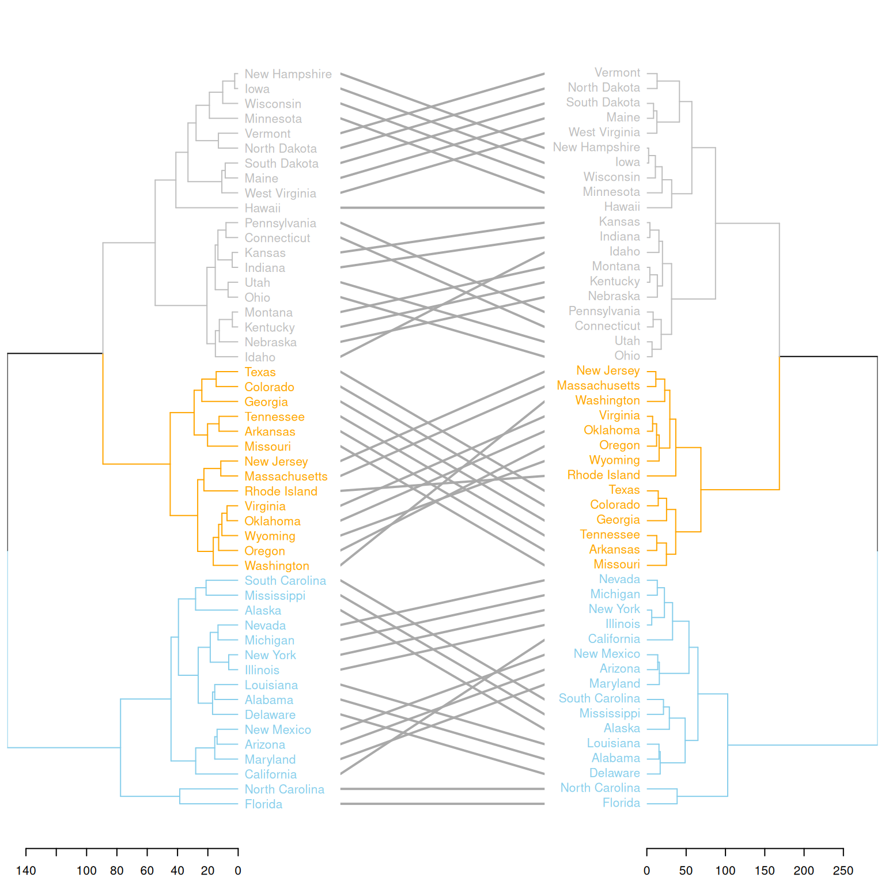
This graph compares the clustering results of two different clustering methods on the same dataset (USArrests). Two hierarchical clustering trees (d1 and d2) are merged into a single graph using dendlist(), and the differences between the two trees are displayed using the tanglegram() function. The graph highlights the different clustering branches and uses colors to distinguish the different partitions in the clustering process by the two methods. This visually shows the differences in the clustering results of the two methods and helps users understand their distinctions.
Applications
1. Basic tree diagram
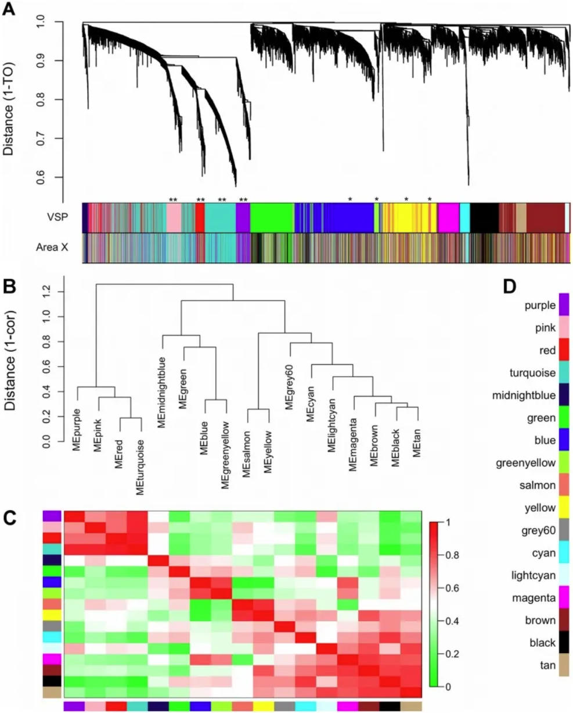
Gene co-expression modules and meta-modules. A) The dendrogram shows the results of hierarchical clustering of genes in the VSP. Leaves along the branches represent gene probes. The y-axis represents the network distance determined by 1 – topological overlap (TO), where values close to 0 indicate higher similarity in probe expression profiles between samples. The color blocks below represent the modules to which probes are assigned in each region of the VSP (top) and Region X (bottom). The colors of the Region X modules are set to match the VSP colors as closely as possible, so color blocks that match in both bands indicate that the VSP module is retained in Region X (e.g., pink, red, turquoise, purple). Unreserved modules: blue, greenish-yellow, yellow, and salmon. (B) The dendrogram shows the results of hierarchical clustering of VSP module characteristic genes (MEs) to examine higher-order relationships between modules. Leaves along the branches represent MEs. The y-axis represents the network distance determined by 1 – correlation, where values close to 0 indicate higher similarity between the main sources of expression perturbations in the modules. (C) Heatmap showing the correlation between VSP MEs. Each row/column represents one ME, indicated by color blocks on the x and y axes. Dark red indicates a strong positive correlation, dark green indicates a strong negative correlation, and white indicates no correlation, as shown on the color scale. The cells on the diagonal are dark red because each ME is perfectly correlated with itself. (D) Color keys for all VSP modules. The same colors are used in subsequent plots. [1]
2. Comparison with expected clustering

Unsupervised results of the dendrogram algorithm applied to the expression matrix (left) and the normalized correlation matrix (Figure 3B) (right). Genes belonging to the same operon are marked with the same color. Note that the four mismatches only occur in the normalized correlation matrix (left). [2]
3. Circular tree diagram
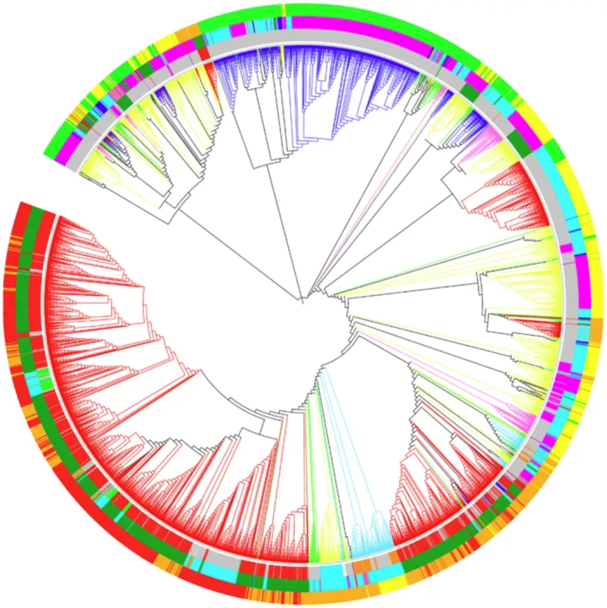
Optimal dendrogram of 3,905 RefSeq viral genomes (k = 9). Lineages are colored by Baltimore classification. Circles are colored from the inside out according to different order, host, and genome size, as shown below: Ranch by Baltimore classification: dsDNA (no RNA stage), red; dsRNA, green; RT virus, pink; ssDNA, blue; ssRNA negative strand, bright blue; ssRNA positive strand, yellow. First circle, from the inside out, in order: Caudovirales, red; Herpesviruses, green; Ligamenvirales, blue; Monogavirales, orange; Nidovirales, cyan; Picornavirales, pink; Tymovirales, dark green; Unclassified, silver. Second circle, from the inside out, by host: Protists, orange; Archaea, red; Bacteria, dark green; Fungi, blue; Animals, cyan; Plants and animals, pale purple-red; Plants, pink; Environment or NA, silver. The third circle, arranged from the inside out, is by genome size: Q1, green; Q2, yellow; Q3, orange; Q4, red. [3]
Reference
[1] Hilliard AT, Miller JE, Horvath S, White SA. Distinct neurogenomic states in basal ganglia subregions relate differently to singing behavior in songbirds. PLoS Comput Biol. 2012;8(11):e1002773. doi: 10.1371/journal.pcbi.1002773. Epub 2012 Nov 8. PMID: 23144607; PMCID: PMC3493463.
[2] Madi A, Friedman Y, Roth D, Regev T, Bransburg-Zabary S, Ben Jacob E. Genome holography: deciphering function-form motifs from gene expression data. PLoS One. 2008 Jul 16;3(7):e2708. doi: 10.1371/journal.pone.0002708. PMID: 18628959; PMCID: PMC2444029.
[3] Zhang Q, Jun SR, Leuze M, Ussery D, Nookaew I. Viral Phylogenomics Using an Alignment-Free Method: A Three-Step Approach to Determine Optimal Length of k-mer. Sci Rep. 2017 Jan 19;7:40712. doi: 10.1038/srep40712. PMID: 28102365; PMCID: PMC5244389.
[4] ggraph: Grammar of Graphs for ggplot2. https://cran.r-project.org/web/packages/ggraph/index.html
[5] igraph: Network Analysis and Visualization. https://cran.r-project.org/web/packages/igraph/index.html
[6] tidyverse: Easily Install and Load the ‘Tidyverse’. https://cran.r-project.org/web/packages/tidyverse/index.html
[7] CollapsibleTree: Interactive Hierarchical Tree Plots. https://cran.r-project.org/web/packages/CollapsibleTree/index.html
[8] dendextend: Extensions to Dendrogram Class. https://cran.r-project.org/web/packages/dendextend/index.html